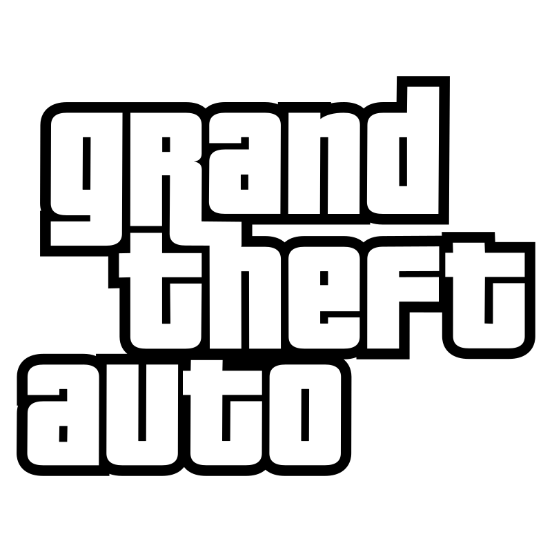

| Grand Theft Auto (abreviado como GTA) es una serie de videojuegos creada por David Jones y luego por Sam Houser y Dan Houser. Originalmente fue desarrollada por DMA Design, que posteriormente pasó a llamarse Rockstar North, de la empresa Rockstar Games. Grand Theft Auto cuenta la historia de distintos criminales y aunque sean varios, por una razón se van relacionando y envolviendo en problemas a más personajes conforme va pasando el tiempo. Generalmente los protagonistas son antihéroes. |  |
NAME |
DATE RELEASED |
| Grand Theft Auto | 1997/1999 |
| Grand Theft Auto 2 | 1999/2000 |
| Grand Theft Auto III | 2001/2002 |
| Grand Theft Auto: Vice City | 2004 |
| Grand Theft Auto: San Andreas | 2005 |
| Grand Theft Auto IV | 2008 |
| Grand Theft Auto V | 2013/2014/2015 |